Slide 1FIRST ROBOTICS COMPETITION
The Introductory
Guide
History · Games · Legendary Teams
Values · Suppliers · Competitive Meta
1. FIRST History & Values
2. Game History 1992–2026
3. Legendary Teams
4. Current Meta & Open Alliance
5. Supplier Guide
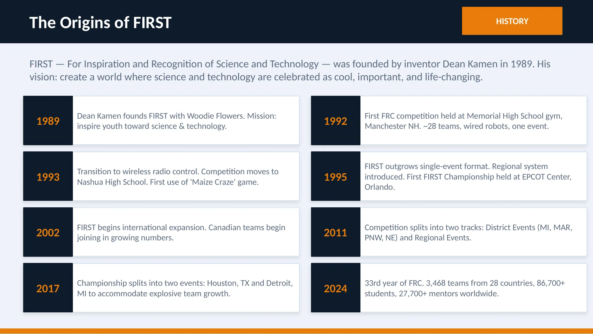
Slide 2The Origins of FIRST
HISTORY
FIRST — For Inspiration and Recognition of Science and Technology — was founded by inventor Dean Kamen in 1989. His vision: create a world where science and technology are celebrated as cool, important, and life-changing.
1989
Dean Kamen founds FIRST with Woodie Flowers. Mission: inspire youth toward science & technology.
1992
First FRC competition held at Memorial High School gym, Manchester NH. ~28 teams, wired robots, one event.
1993
Transition to wireless radio control. Competition moves to Nashua High School. First use of 'Maize Craze' game.
1995
FIRST outgrows single-event format. Regional system introduced. First FIRST Championship held at EPCOT Center, Orlando.
2002
FIRST begins international expansion. Canadian teams begin joining in growing numbers.
2011
Competition splits into two tracks: District Events (MI, MAR, PNW, NE) and Regional Events.
2017
Championship splits into two events: Houston, TX and Detroit, MI to accommodate explosive team growth.
2024
33rd year of FRC. 3,468 teams from 28 countries, 86,700+ students, 27,700+ mentors worldwide.
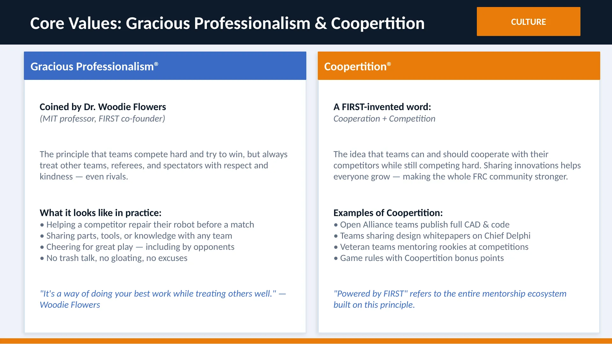
Slide 3Core Values: Gracious Professionalism & Coopertition
CULTURE
Gracious Professionalism®
Coined by Dr. Woodie Flowers
(MIT professor, FIRST co-founder)
The principle that teams compete hard and try to win, but always treat other teams, referees, and spectators with respect and kindness — even rivals.
What it looks like in practice:
• Helping a competitor repair their robot before a match
• Sharing parts, tools, or knowledge with any team
• Cheering for great play — including by opponents
• No trash talk, no gloating, no excuses
"It's a way of doing your best work while treating others well." — Woodie Flowers
Coopertition®
A FIRST-invented word:
Cooperation + Competition
The idea that teams can and should cooperate with their competitors while still competing hard. Sharing innovations helps everyone grow — making the whole FRC community stronger.
Examples of Coopertition:
• Open Alliance teams publish full CAD & code
• Teams sharing design whitepapers on Chief Delphi
• Veteran teams mentoring rookies at competitions
• Game rules with Coopertition bonus points
"Powered by FIRST" refers to the entire mentorship ecosystem built on this principle.
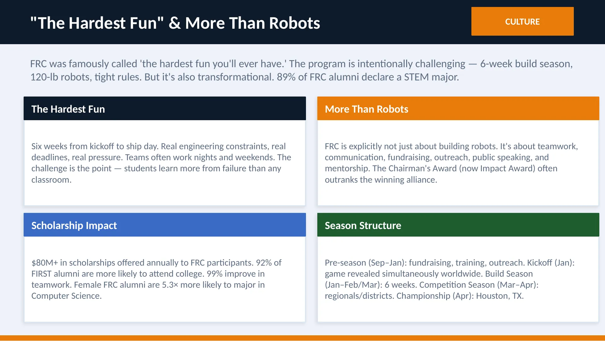
Slide 4"The Hardest Fun" & More Than Robots
CULTURE
FRC was famously called 'the hardest fun you'll ever have.' The program is intentionally challenging — 6-week build season, 120-lb robots, tight rules. But it's also transformational. 89% of FRC alumni declare a STEM major.
The Hardest Fun
Six weeks from kickoff to ship day. Real engineering constraints, real deadlines, real pressure. Teams often work nights and weekends. The challenge is the point — students learn more from failure than any classroom.
More Than Robots
FRC is explicitly not just about building robots. It's about teamwork, communication, fundraising, outreach, public speaking, and mentorship. The Chairman's Award (now Impact Award) often outranks the winning alliance.
Scholarship Impact
$80M+ in scholarships offered annually to FRC participants. 92% of FIRST alumni are more likely to attend college. 99% improve in teamwork. Female FRC alumni are 5.3× more likely to major in Computer Science.
Season Structure
Pre-season (Sep–Jan): fundraising, training, outreach. Kickoff (Jan): game revealed simultaneously worldwide. Build Season (Jan–Feb/Mar): 6 weeks. Competition Season (Mar–Apr): regionals/districts. Championship (Apr): Houston, TX.
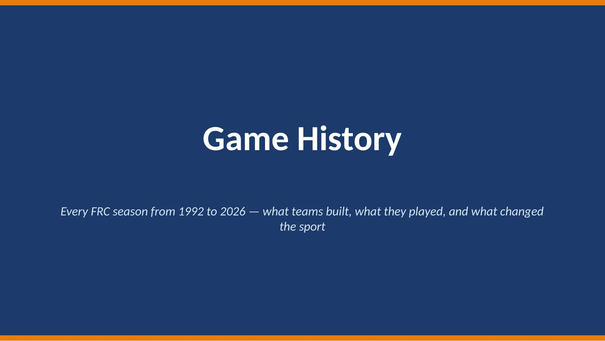
Slide 5Game History
Every FRC season from 1992 to 2026 — what teams built, what they played, and what changed the sport
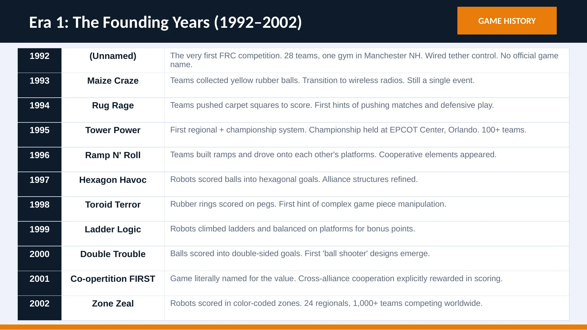
Slide 6Era 1: The Founding Years (1992–2002)
GAME HISTORY
1992
(Unnamed)
The very first FRC competition. 28 teams, one gym in Manchester NH. Wired tether control. No official game name.
1993
Maize Craze
Teams collected yellow rubber balls. Transition to wireless radios. Still a single event.
1994
Rug Rage
Teams pushed carpet squares to score. First hints of pushing matches and defensive play.
1995
Tower Power
First regional + championship system. Championship held at EPCOT Center, Orlando. 100+ teams.
1996
Ramp N' Roll
Teams built ramps and drove onto each other's platforms. Cooperative elements appeared.
1997
Hexagon Havoc
Robots scored balls into hexagonal goals. Alliance structures refined.
1998
Toroid Terror
Rubber rings scored on pegs. First hint of complex game piece manipulation.
1999
Ladder Logic
Robots climbed ladders and balanced on platforms for bonus points.
2000
Double Trouble
Balls scored into double-sided goals. First 'ball shooter' designs emerge.
2001
Co-opertition FIRST
Game literally named for the value. Cross-alliance cooperation explicitly rewarded in scoring.
2002
Zone Zeal
Robots scored in color-coded zones. 24 regionals, 1,000+ teams competing worldwide.
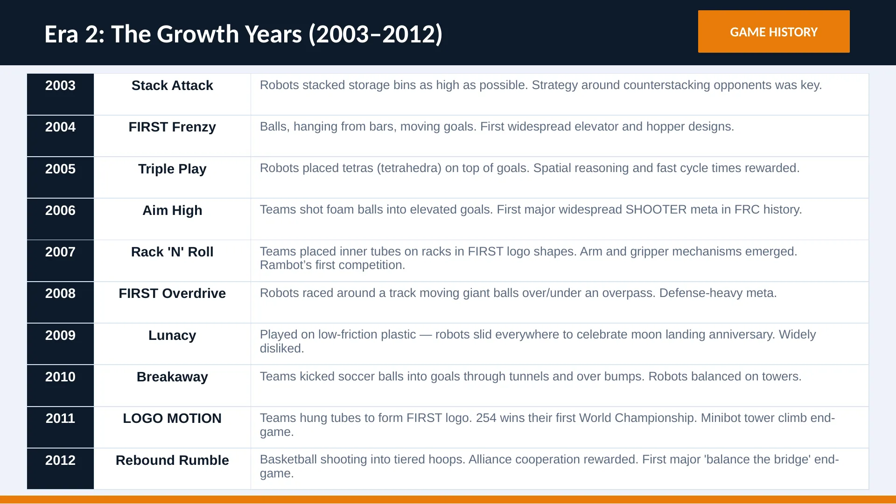
Slide 7Era 2: The Growth Years (2003–2012)
GAME HISTORY
2003
Stack Attack
Robots stacked storage bins as high as possible. Strategy around counterstacking opponents was key.
2004
FIRST Frenzy
Balls, hanging from bars, moving goals. First widespread elevator and hopper designs.
2005
Triple Play
Robots placed tetras (tetrahedra) on top of goals. Spatial reasoning and fast cycle times rewarded.
2006
Aim High
Teams shot foam balls into elevated goals. First major widespread SHOOTER meta in FRC history.
2007
Rack 'N' Roll
Teams placed inner tubes on racks in FIRST logo shapes. Arm and gripper mechanisms emerged.Rambot’s first competition.
2008
FIRST Overdrive
Robots raced around a track moving giant balls over/under an overpass. Defense-heavy meta.
2009
Lunacy
Played on low-friction plastic — robots slid everywhere to celebrate moon landing anniversary. Widely disliked.
2010
Breakaway
Teams kicked soccer balls into goals through tunnels and over bumps. Robots balanced on towers.
2011
LOGO MOTION
Teams hung tubes to form FIRST logo. 254 wins their first World Championship. Minibot tower climb end-game.
2012
Rebound Rumble
Basketball shooting into tiered hoops. Alliance cooperation rewarded. First major 'balance the bridge' end-game.
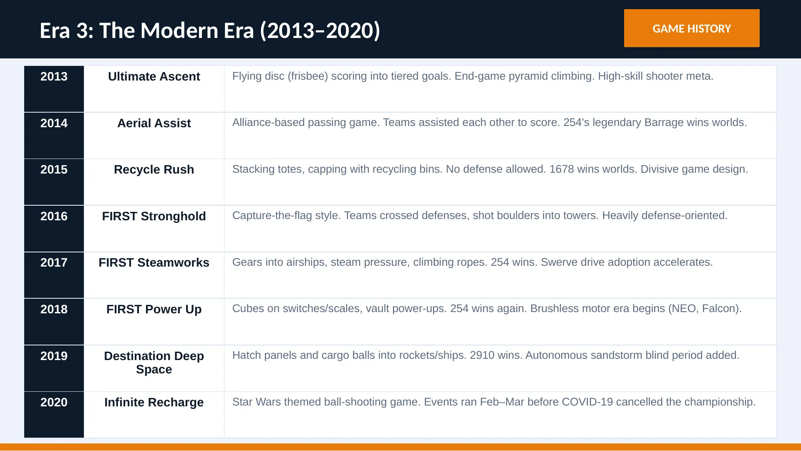
Slide 8Era 3: The Modern Era (2013–2020)
GAME HISTORY
2013
Ultimate Ascent
Flying disc (frisbee) scoring into tiered goals. End-game pyramid climbing. High-skill shooter meta.
2014
Aerial Assist
Alliance-based passing game. Teams assisted each other to score. 254's legendary Barrage wins worlds.
2015
Recycle Rush
Stacking totes, capping with recycling bins. No defense allowed. 1678 wins worlds. Divisive game design.
2016
FIRST Stronghold
Capture-the-flag style. Teams crossed defenses, shot boulders into towers. Heavily defense-oriented.
2017
FIRST Steamworks
Gears into airships, steam pressure, climbing ropes. 254 wins. Swerve drive adoption accelerates.
2018
FIRST Power Up
Cubes on switches/scales, vault power-ups. 254 wins again. Brushless motor era begins (NEO, Falcon).
2019
Destination Deep Space
Hatch panels and cargo balls into rockets/ships. 2910 wins. Autonomous sandstorm blind period added.
2020
Infinite Recharge
Star Wars themed ball-shooting game. Events ran Feb–Mar before COVID-19 cancelled the championship.
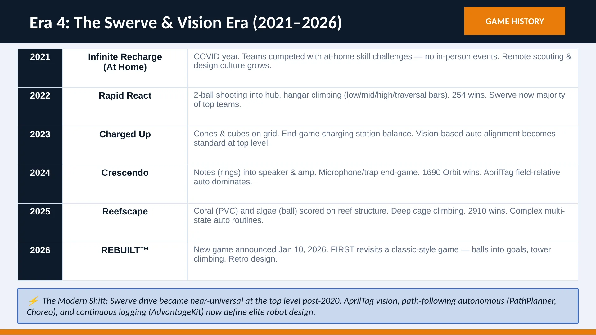
Slide 9Era 4: The Swerve & Vision Era (2021–2026)
GAME HISTORY
2021
Infinite Recharge
(At Home)
COVID year. Teams competed with at-home skill challenges — no in-person events. Remote scouting & design culture grows.
2022
Rapid React
2-ball shooting into hub, hangar climbing (low/mid/high/traversal bars). 254 wins. Swerve now majority of top teams.
2023
Charged Up
Cones & cubes on grid. End-game charging station balance. Vision-based auto alignment becomes standard at top level.
2024
Crescendo
Notes (rings) into speaker & amp. Microphone/trap end-game. 1690 Orbit wins. AprilTag field-relative auto dominates.
2025
Reefscape
Coral (PVC) and algae (ball) scored on reef structure. Deep cage climbing. 2910 wins. Complex multi-state auto routines.
2026
REBUILT™
New game announced Jan 10, 2026. FIRST revisits a classic-style game — balls into goals, tower climbing. Retro design.
⚡ The Modern Shift: Swerve drive became near-universal at the top level post-2020. AprilTag vision, path-following autonomous (PathPlanner, Choreo), and continuous logging (AdvantageKit) now define elite robot design.
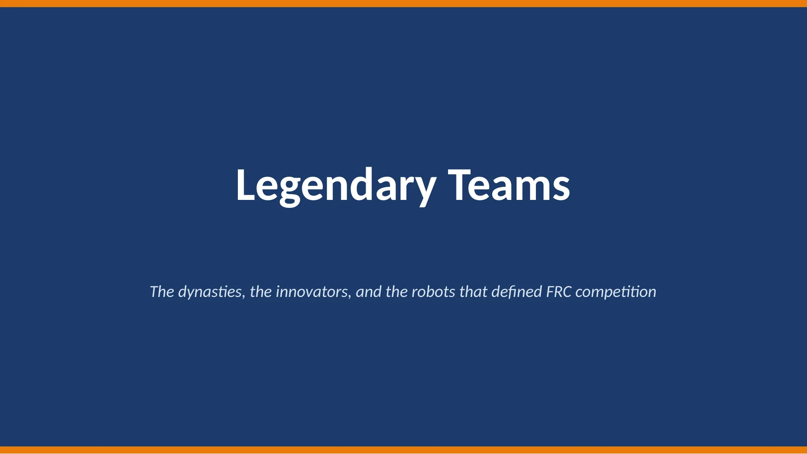
Slide 10Legendary Teams
The dynasties, the innovators, and the robots that defined FRC competition
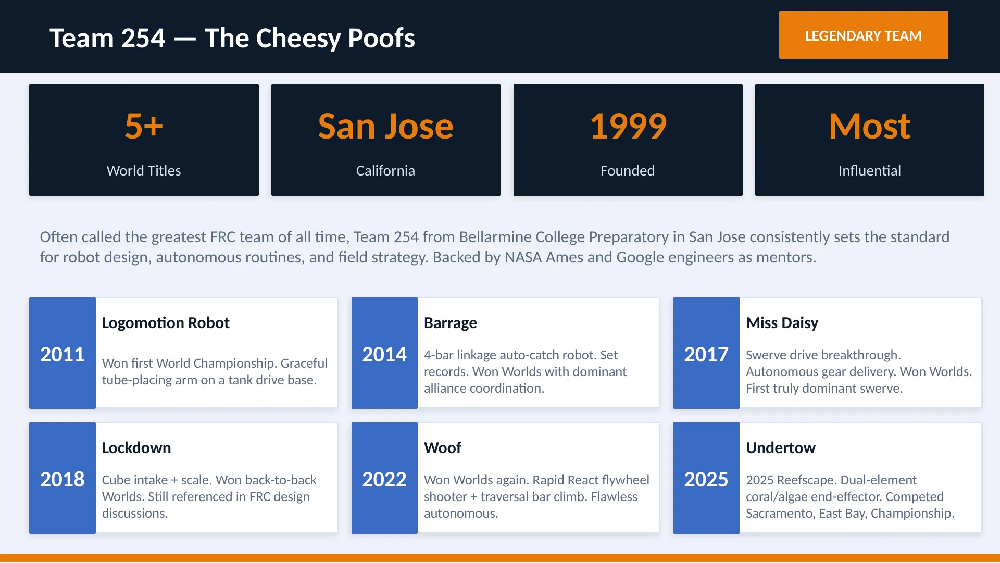
Slide 11Team 254 — The Cheesy Poofs
LEGENDARY TEAM
5+
World Titles
San Jose
California
1999
Founded
Most
Influential
Often called the greatest FRC team of all time, Team 254 from Bellarmine College Preparatory in San Jose consistently sets the standard for robot design, autonomous routines, and field strategy. Backed by NASA Ames and Google engineers as mentors.
2011
Logomotion Robot
Won first World Championship. Graceful tube-placing arm on a tank drive base.
2014
Barrage
4-bar linkage auto-catch robot. Set records. Won Worlds with dominant alliance coordination.
2017
Miss Daisy
Swerve drive breakthrough. Autonomous gear delivery. Won Worlds. First truly dominant swerve.
2018
Lockdown
Cube intake + scale. Won back-to-back Worlds. Still referenced in FRC design discussions.
2022
Woof
Won Worlds again. Rapid React flywheel shooter + traversal bar climb. Flawless autonomous.
2025
Undertow
2025 Reefscape. Dual-element coral/algae end-effector. Competed Sacramento, East Bay, Championship.
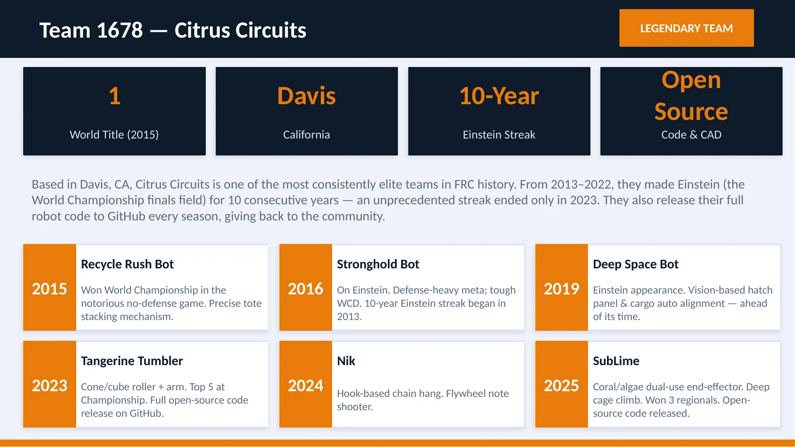
Slide 12Team 1678 — Citrus Circuits
LEGENDARY TEAM
1
World Title (2015)
Davis
California
10-Year
Einstein Streak
Open
Source
Code & CAD
Based in Davis, CA, Citrus Circuits is one of the most consistently elite teams in FRC history. From 2013–2022, they made Einstein (the World Championship finals field) for 10 consecutive years — an unprecedented streak ended only in 2023. They also release their full robot code to GitHub every season, giving back to the community.
2015
Recycle Rush Bot
Won World Championship in the notorious no-defense game. Precise tote stacking mechanism.
2016
Stronghold Bot
On Einstein. Defense-heavy meta; tough WCD. 10-year Einstein streak began in 2013.
2019
Deep Space Bot
Einstein appearance. Vision-based hatch panel & cargo auto alignment — ahead of its time.
2023
Tangerine Tumbler
Cone/cube roller + arm. Top 5 at Championship. Full open-source code release on GitHub.
2024
Nik
Hook-based chain hang. Flywheel note shooter.
2025
SubLime
Coral/algae dual-use end-effector. Deep cage climb. Won 3 regionals. Open-source code released.
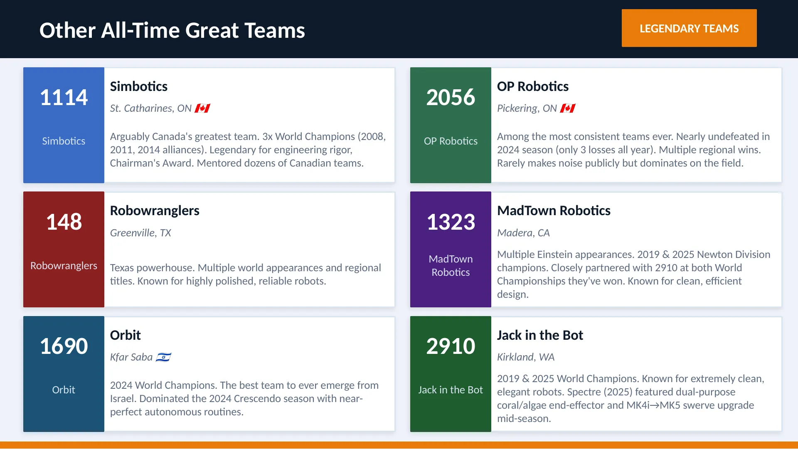
Slide 13Other All-Time Great Teams
LEGENDARY TEAMS
1114
Simbotics
Simbotics
St. Catharines, ON 🇨🇦
Arguably Canada's greatest team. 3x World Champions (2008, 2011, 2014 alliances). Legendary for engineering rigor, Chairman's Award. Mentored dozens of Canadian teams.
2056
OP Robotics
OP Robotics
Pickering, ON 🇨🇦
Among the most consistent teams ever. Nearly undefeated in 2024 season (only 3 losses all year). Multiple regional wins. Rarely makes noise publicly but dominates on the field.
148
Robowranglers
Robowranglers
Greenville, TX
Texas powerhouse. Multiple world appearances and regional titles. Known for highly polished, reliable robots.
1323
MadTown Robotics
MadTown Robotics
Madera, CA
Multiple Einstein appearances. 2019 & 2025 Newton Division champions. Closely partnered with 2910 at both World Championships they've won. Known for clean, efficient design.
1690
Orbit
Orbit
Kfar Saba 🇮🇱
2024 World Champions. The best team to ever emerge from Israel. Dominated the 2024 Crescendo season with near-perfect autonomous routines.
2910
Jack in the Bot
Jack in the Bot
Kirkland, WA
2019 & 2025 World Champions. Known for extremely clean, elegant robots. Spectre (2025) featured dual-purpose coral/algae end-effector and MK4i→MK5 swerve upgrade mid-season.Slide 14More Notable Teams — Low-Number Legends
LEGENDARY TEAMS
27
Rush
Rush
Clarkston, MI
Michigan legend. Won the Chairman's (Impact) Award 4 consecutive years before Hall of Fame induction in 2014. Won the Michigan State Championship in 2024. Model team for community outreach programs.
67
The HOT Team
The HOT Team
Highland, MI
Heroes of Tomorrow. Sponsored by General Motors. Hall of Fame via Chairman's Award 2005. One of FRC's oldest and most respected programs. Strong mentor network from GM engineering staff.
111
WildStang
WildStang
Arlington Hts., IL
Motorola-sponsored powerhouse. Chairman's Award 2006. Founded 1996. One of FRC's most recognized programs for off-field impact, STEM outreach, and student-led mentorship of other teams.
118
Robonauts
Robonauts
Houston, TX 🚀
Founded 1997 — NASA Johnson Space Center / Clear Creek ISD. 2015 World Champions. Annually publish the Everybot — a full reference robot design for low-resource teams. Most important community contribution in FRC.
971
Spartan Robotics
Spartan Robotics
San Jose, CA
Mentored by Google engineers. Consistently one of the most technically impressive West Coast teams. Known for exceptional build quality, CAD discipline, and annual workshops open to all teams. Full resource library online.
973
Greybots
Greybots
Atwater, CA
RAMP (Remote Assistance and Mentoring Program) — one of the most active free mentorship programs in FRC. Help new and under-resourced teams remotely. Known for game strategy expertise and design simplicity.
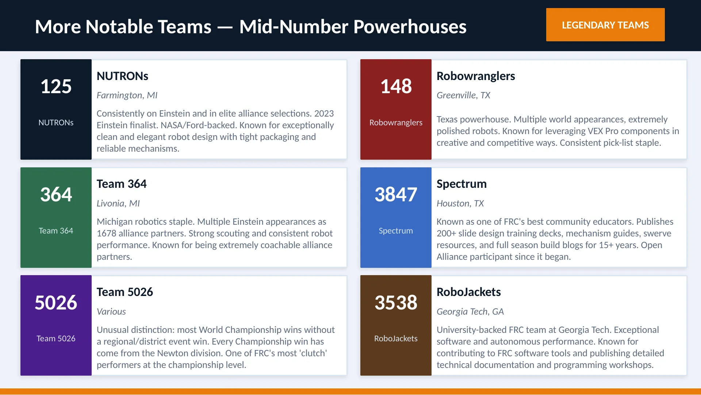
Slide 15More Notable Teams — Mid-Number Powerhouses
LEGENDARY TEAMS
125
NUTRONs
NUTRONs
Farmington, MI
Consistently on Einstein and in elite alliance selections. 2023 Einstein finalist. NASA/Ford-backed. Known for exceptionally clean and elegant robot design with tight packaging and reliable mechanisms.
148
Robowranglers
Robowranglers
Greenville, TX
Texas powerhouse. Multiple world appearances, extremely polished robots. Known for leveraging VEX Pro components in creative and competitive ways. Consistent pick-list staple.
364
Team 364
Team 364
Livonia, MI
Michigan robotics staple. Multiple Einstein appearances as 1678 alliance partners. Strong scouting and consistent robot performance. Known for being extremely coachable alliance partners.
3847
Spectrum
Spectrum
Houston, TX
Known as one of FRC's best community educators. Publishes 200+ slide design training decks, mechanism guides, swerve resources, and full season build blogs for 15+ years. Open Alliance participant since it began.
5026
Team 5026
Team 5026
Various
Unusual distinction: most World Championship wins without a regional/district event win. Every Championship win has come from the Newton division. One of FRC's most 'clutch' performers at the championship level.
3538
RoboJackets
RoboJackets
Georgia Tech, GA
University-backed FRC team at Georgia Tech. Exceptional software and autonomous performance. Known for contributing to FRC software tools and publishing detailed technical documentation and programming workshops.
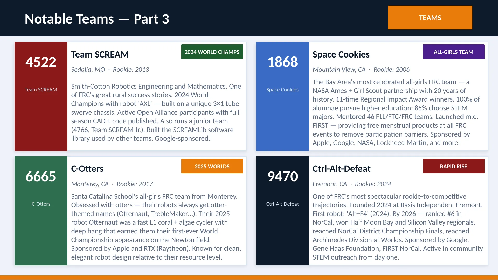
Slide 16Notable Teams — Part 3
TEAMS
4522
Team SCREAM
Team SCREAM
Sedalia, MO · Rookie: 2013
2024 WORLD CHAMPS
Smith-Cotton Robotics Engineering and Mathematics. One of FRC's great rural success stories. 2024 World Champions with robot 'AXL' — built on a unique 3×1 tube swerve chassis. Active Open Alliance participants with full season CAD + code published. Also runs a junior team (4766, Team SCREAM Jr.). Built the SCREAMLib software library used by other teams. Google-sponsored.
1868
Space Cookies
Space Cookies
Mountain View, CA · Rookie: 2006
ALL-GIRLS TEAM
The Bay Area's most celebrated all-girls FRC team — a NASA Ames + Girl Scout partnership with 20 years of history. 11-time Regional Impact Award winners. 100% of alumnae pursue higher education; 85% choose STEM majors. Mentored 46 FLL/FTC/FRC teams. Launched m.e. FIRST — providing free menstrual products at all FRC events to remove participation barriers. Sponsored by Apple, Google, NASA, Lockheed Martin, and more.
6665
C-Otters
C-Otters
Monterey, CA · Rookie: 2017
2025 WORLDS
Santa Catalina School's all-girls FRC team from Monterey. Obsessed with otters — their robots always get otter-themed names (Otternaut, TrebleMaker…). Their 2025 robot Otternaut was a fast L1 coral + algae cycler with deep hang that earned them their first-ever World Championship appearance on the Newton field. Sponsored by Apple and RTX (Raytheon). Known for clean, elegant robot design relative to their resource level.
9470
Ctrl-Alt-Defeat
Ctrl-Alt-Defeat
Fremont, CA · Rookie: 2024
RAPID RISE
One of FRC's most spectacular rookie-to-competitive trajectories. Founded 2024 at Basis Independent Fremont. First robot: 'Alt+F4' (2024). By 2026 — ranked #6 in NorCal, won Half Moon Bay and Silicon Valley regionals, reached NorCal District Championship Finals, reached Archimedes Division at Worlds. Sponsored by Google, Gene Haas Foundation, FIRST NorCal. Active in community STEM outreach from day one.
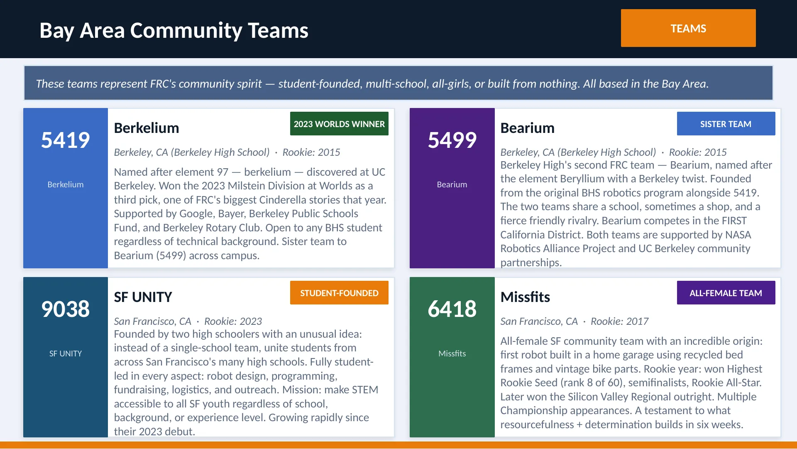
Slide 17Bay Area Community Teams
TEAMS
These teams represent FRC's community spirit — student-founded, multi-school, all-girls, or built from nothing. All based in the Bay Area.
5419
Berkelium
Berkelium
Berkeley, CA (Berkeley High School) · Rookie: 2015
2023 WORLDS WINNER
Named after element 97 — berkelium — discovered at UC Berkeley. Won the 2023 Milstein Division at Worlds as a third pick, one of FRC's biggest Cinderella stories that year. Supported by Google, Bayer, Berkeley Public Schools Fund, and Berkeley Rotary Club. Open to any BHS student regardless of technical background. Sister team to Bearium (5499) across campus.
5499
Bearium
Bearium
Berkeley, CA (Berkeley High School) · Rookie: 2015
SISTER TEAM
Berkeley High's second FRC team — Bearium, named after the element Beryllium with a Berkeley twist. Founded from the original BHS robotics program alongside 5419. The two teams share a school, sometimes a shop, and a fierce friendly rivalry. Bearium competes in the FIRST California District. Both teams are supported by NASA Robotics Alliance Project and UC Berkeley community partnerships.
9038
SF UNITY
SF UNITY
San Francisco, CA · Rookie: 2023
STUDENT-FOUNDED
Founded by two high schoolers with an unusual idea: instead of a single-school team, unite students from across San Francisco's many high schools. Fully student-led in every aspect: robot design, programming, fundraising, logistics, and outreach. Mission: make STEM accessible to all SF youth regardless of school, background, or experience level. Growing rapidly since their 2023 debut.
6418
Missfits
Missfits
San Francisco, CA · Rookie: 2017
ALL-FEMALE TEAM
All-female SF community team with an incredible origin: first robot built in a home garage using recycled bed frames and vintage bike parts. Rookie year: won Highest Rookie Seed (rank 8 of 60), semifinalists, Rookie All-Star. Later won the Silicon Valley Regional outright. Multiple Championship appearances. A testament to what resourcefulness + determination builds in six weeks.
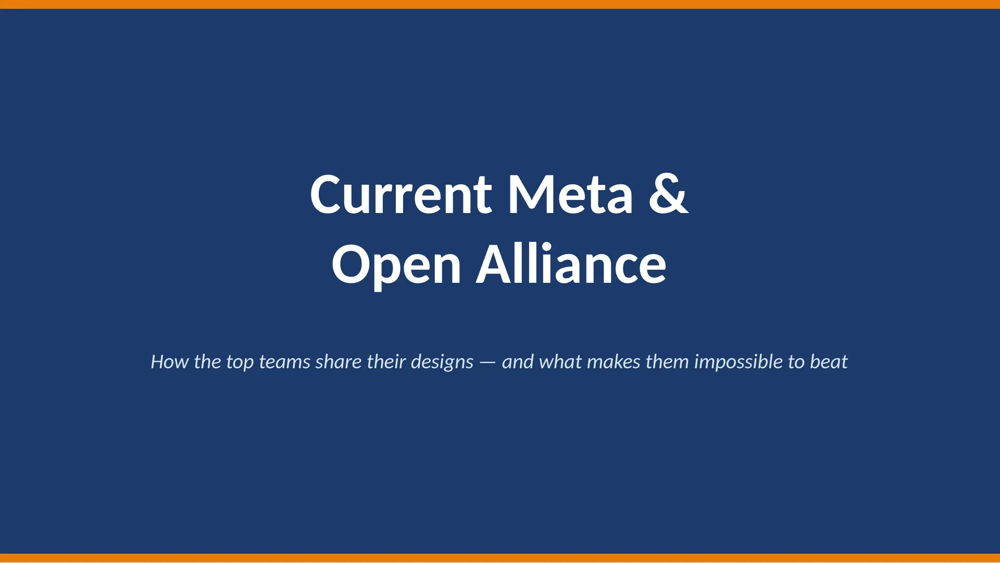
Slide 18Current Meta &
Open Alliance
How the top teams share their designs — and what makes them impossible to beat
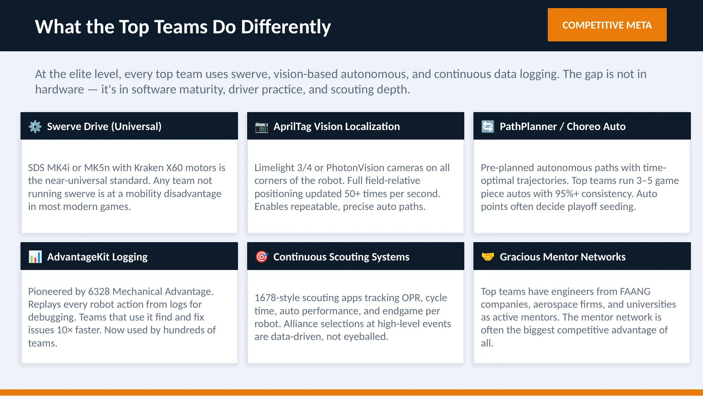
Slide 19What the Top Teams Do Differently
COMPETITIVE META
At the elite level, every top team uses swerve, vision-based autonomous, and continuous data logging. The gap is not in hardware — it's in software maturity, driver practice, and scouting depth.
⚙️ Swerve Drive (Universal)
SDS MK4i or MK5n with Kraken X60 motors is the near-universal standard. Any team not running swerve is at a mobility disadvantage in most modern games.
📷 AprilTag Vision Localization
Limelight 3/4 or PhotonVision cameras on all corners of the robot. Full field-relative positioning updated 50+ times per second. Enables repeatable, precise auto paths.
🔄 PathPlanner / Choreo Auto
Pre-planned autonomous paths with time-optimal trajectories. Top teams run 3–5 game piece autos with 95%+ consistency. Auto points often decide playoff seeding.
📊 AdvantageKit Logging
Pioneered by 6328 Mechanical Advantage. Replays every robot action from logs for debugging. Teams that use it find and fix issues 10× faster. Now used by hundreds of teams.
🎯 Continuous Scouting Systems
1678-style scouting apps tracking OPR, cycle time, auto performance, and endgame per robot. Alliance selections at high-level events are data-driven, not eyeballed.
🤝 Gracious Mentor Networks
Top teams have engineers from FAANG companies, aerospace firms, and universities as active mentors. The mentor network is often the biggest competitive advantage of all.
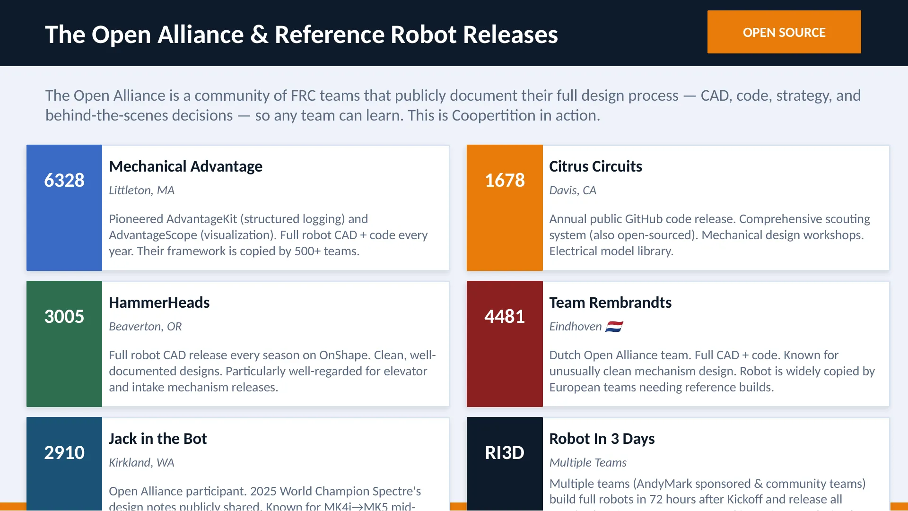
Slide 20The Open Alliance & Reference Robot Releases
OPEN SOURCE
The Open Alliance is a community of FRC teams that publicly document their full design process — CAD, code, strategy, and behind-the-scenes decisions — so any team can learn. This is Coopertition in action.
6328
Mechanical Advantage
Littleton, MA
Pioneered AdvantageKit (structured logging) and AdvantageScope (visualization). Full robot CAD + code every year. Their framework is copied by 500+ teams.
1678
Citrus Circuits
Davis, CA
Annual public GitHub code release. Comprehensive scouting system (also open-sourced). Mechanical design workshops. Electrical model library.
3005
HammerHeads
Beaverton, OR
Full robot CAD release every season on OnShape. Clean, well-documented designs. Particularly well-regarded for elevator and intake mechanism releases.
4481
Team Rembrandts
Eindhoven 🇳🇱
Dutch Open Alliance team. Full CAD + code. Known for unusually clean mechanism design. Robot is widely copied by European teams needing reference builds.
2910
Jack in the Bot
Kirkland, WA
Open Alliance participant. 2025 World Champion Spectre's design notes publicly shared. Known for MK4i→MK5 mid-season module upgrade — documented in detail.
RI3D
Robot In 3 Days
Multiple Teams
Multiple teams (AndyMark sponsored & community teams) build full robots in 72 hours after Kickoff and release all CAD/code. Gives every team a working reference design by week 1.
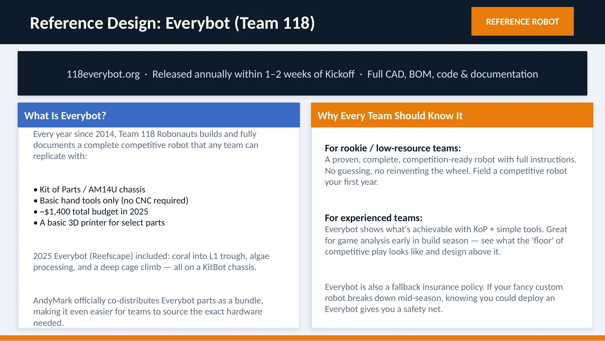
Slide 21Reference Design: Everybot (Team 118)
REFERENCE ROBOT
118everybot.org · Released annually within 1–2 weeks of Kickoff · Full CAD, BOM, code & documentation
What Is Everybot?
Every year since 2014, Team 118 Robonauts builds and fully documents a complete competitive robot that any team can replicate with:
• Kit of Parts / AM14U chassis
• Basic hand tools only (no CNC required)
• ~$1,400 total budget in 2025
• A basic 3D printer for select parts
2025 Everybot (Reefscape) included: coral into L1 trough, algae processing, and a deep cage climb — all on a KitBot chassis.
AndyMark officially co-distributes Everybot parts as a bundle, making it even easier for teams to source the exact hardware needed.
Why Every Team Should Know It
For rookie / low-resource teams:
A proven, complete, competition-ready robot with full instructions. No guessing, no reinventing the wheel. Field a competitive robot your first year.
For experienced teams:
Everybot shows what's achievable with KoP + simple tools. Great for game analysis early in build season — see what the 'floor' of competitive play looks like and design above it.
Everybot is also a fallback insurance policy. If your fancy custom robot breaks down mid-season, knowing you could deploy an Everybot gives you a safety net.
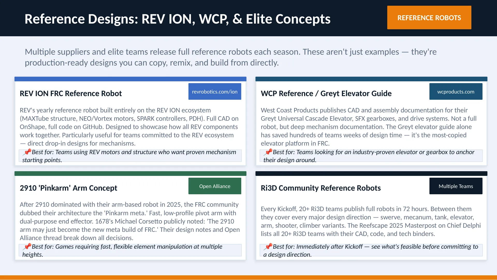
Slide 22Reference Designs: REV ION, WCP, & Elite Concepts
REFERENCE ROBOTS
Multiple suppliers and elite teams release full reference robots each season. These aren't just examples — they're production-ready designs you can copy, remix, and build from directly.
REV ION FRC Reference Robot
revrobotics.com/ion
REV's yearly reference robot built entirely on the REV ION ecosystem (MAXTube structure, NEO/Vortex motors, SPARK controllers, PDH). Full CAD on OnShape, full code on GitHub. Designed to showcase how all REV components work together. Particularly useful for teams committed to the REV ecosystem — direct drop-in designs for mechanisms.
📌 Best for: Teams using REV motors and structure who want proven mechanism starting points.
WCP Reference / Greyt Elevator Guide
wcproducts.com
West Coast Products publishes CAD and assembly documentation for their Greyt Universal Cascade Elevator, SFX gearboxes, and drive systems. Not a full robot, but deep mechanism documentation. The Greyt elevator guide alone has saved hundreds of teams weeks of design time — it's the most-copied elevator platform in FRC.
📌 Best for: Teams looking for an industry-proven elevator or gearbox to anchor their design around.
2910 'Pinkarm' Arm Concept
Open Alliance
After 2910 dominated with their arm-based robot in 2025, the FRC community dubbed their architecture the 'Pinkarm meta.' Fast, low-profile pivot arm with dual-purpose end effector. 1678's Michael Corsetto publicly noted: 'The 2910 arm may just become the new meta build of FRC.' Their design notes and Open Alliance thread break down all decisions.
📌 Best for: Games requiring fast, flexible element manipulation at multiple heights.
Ri3D Community Reference Robots
Multiple Teams
Every Kickoff, 20+ Ri3D teams publish full robots in 72 hours. Between them they cover every major design direction — swerve, mecanum, tank, elevator, arm, shooter, climber variants. The Reefscape 2025 Masterpost on Chief Delphi lists all 20+ Ri3D teams with their CAD, code, and tech binders.
📌 Best for: Immediately after Kickoff — see what's feasible before committing to a design direction.
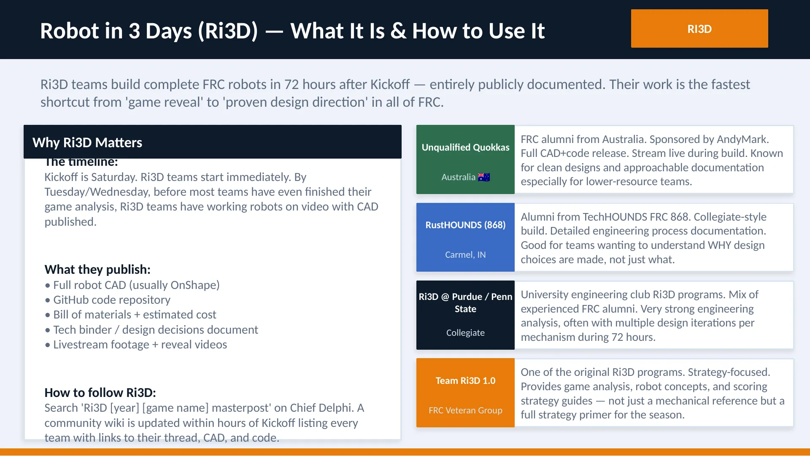
Slide 23Robot in 3 Days (Ri3D) — What It Is & How to Use It
RI3D
Ri3D teams build complete FRC robots in 72 hours after Kickoff — entirely publicly documented. Their work is the fastest shortcut from 'game reveal' to 'proven design direction' in all of FRC.
Why Ri3D Matters
The timeline:
Kickoff is Saturday. Ri3D teams start immediately. By Tuesday/Wednesday, before most teams have even finished their game analysis, Ri3D teams have working robots on video with CAD published.
What they publish:
• Full robot CAD (usually OnShape)
• GitHub code repository
• Bill of materials + estimated cost
• Tech binder / design decisions document
• Livestream footage + reveal videos
How to follow Ri3D:
Search 'Ri3D [year] [game name] masterpost' on Chief Delphi. A community wiki is updated within hours of Kickoff listing every team with links to their thread, CAD, and code.
Unqualified Quokkas
Australia 🇦🇺
FRC alumni from Australia. Sponsored by AndyMark. Full CAD+code release. Stream live during build. Known for clean designs and approachable documentation especially for lower-resource teams.
RustHOUNDS (868)
Carmel, IN
Alumni from TechHOUNDS FRC 868. Collegiate-style build. Detailed engineering process documentation. Good for teams wanting to understand WHY design choices are made, not just what.
Ri3D @ Purdue / Penn State
Collegiate
University engineering club Ri3D programs. Mix of experienced FRC alumni. Very strong engineering analysis, often with multiple design iterations per mechanism during 72 hours.
Team Ri3D 1.0
FRC Veteran Group
One of the original Ri3D programs. Strategy-focused. Provides game analysis, robot concepts, and scoring strategy guides — not just a mechanical reference but a full strategy primer for the season.
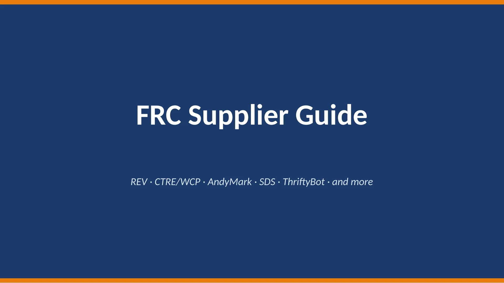
Slide 24FRC Supplier Guide
REV · CTRE/WCP · AndyMark · SDS · ThriftyBot · and more
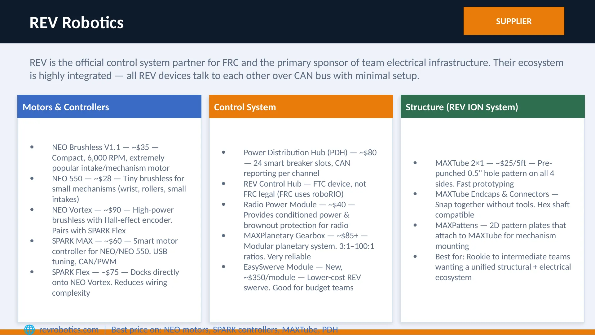
Slide 25REV Robotics
SUPPLIER
REV is the official control system partner for FRC and the primary sponsor of team electrical infrastructure. Their ecosystem is highly integrated — all REV devices talk to each other over CAN bus with minimal setup.
Motors & Controllers
NEO Brushless V1.1 — ~$35 — Compact, 6,000 RPM, extremely popular intake/mechanism motor
NEO 550 — ~$28 — Tiny brushless for small mechanisms (wrist, rollers, small intakes)
NEO Vortex — ~$90 — High-power brushless with Hall-effect encoder. Pairs with SPARK Flex
SPARK MAX — ~$60 — Smart motor controller for NEO/NEO 550. USB tuning, CAN/PWM
SPARK Flex — ~$75 — Docks directly onto NEO Vortex. Reduces wiring complexity
Control System
Power Distribution Hub (PDH) — ~$80 — 24 smart breaker slots, CAN reporting per channel
REV Control Hub — FTC device, not FRC legal (FRC uses roboRIO)
Radio Power Module — ~$40 — Provides conditioned power & brownout protection for radio
MAXPlanetary Gearbox — ~$85+ — Modular planetary system. 3:1–100:1 ratios. Very reliable
EasySwerve Module — New, ~$350/module — Lower-cost REV swerve. Good for budget teams
Structure (REV ION System)
MAXTube 2×1 — ~$25/5ft — Pre-punched 0.5" hole pattern on all 4 sides. Fast prototyping
MAXTube Endcaps & Connectors — Snap together without tools. Hex shaft compatible
MAXPattens — 2D pattern plates that attach to MAXTube for mechanism mounting
Best for: Rookie to intermediate teams wanting a unified structural + electrical ecosystem
🌐 revrobotics.com | Best price on: NEO motors, SPARK controllers, MAXTube, PDH
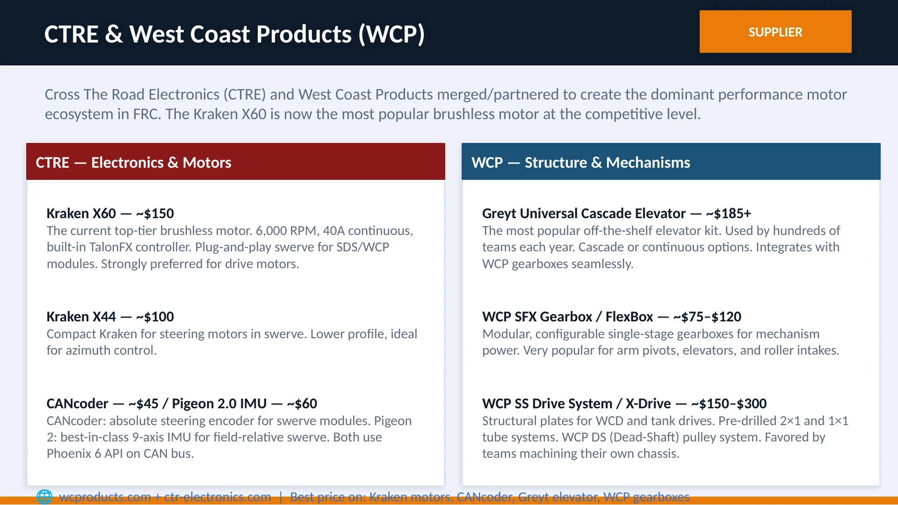
Slide 26CTRE & West Coast Products (WCP)
SUPPLIER
Cross The Road Electronics (CTRE) and West Coast Products merged/partnered to create the dominant performance motor ecosystem in FRC. The Kraken X60 is now the most popular brushless motor at the competitive level.
CTRE — Electronics & Motors
Kraken X60 — ~$150
The current top-tier brushless motor. 6,000 RPM, 40A continuous, built-in TalonFX controller. Plug-and-play swerve for SDS/WCP modules. Strongly preferred for drive motors.
Kraken X44 — ~$100
Compact Kraken for steering motors in swerve. Lower profile, ideal for azimuth control.
CANcoder — ~$45 / Pigeon 2.0 IMU — ~$60
CANcoder: absolute steering encoder for swerve modules. Pigeon 2: best-in-class 9-axis IMU for field-relative swerve. Both use Phoenix 6 API on CAN bus.
WCP — Structure & Mechanisms
Greyt Universal Cascade Elevator — ~$185+
The most popular off-the-shelf elevator kit. Used by hundreds of teams each year. Cascade or continuous options. Integrates with WCP gearboxes seamlessly.
WCP SFX Gearbox / FlexBox — ~$75–$120
Modular, configurable single-stage gearboxes for mechanism power. Very popular for arm pivots, elevators, and roller intakes.
WCP SS Drive System / X-Drive — ~$150–$300
Structural plates for WCD and tank drives. Pre-drilled 2×1 and 1×1 tube systems. WCP DS (Dead-Shaft) pulley system. Favored by teams machining their own chassis.
🌐 wcproducts.com + ctr-electronics.com | Best price on: Kraken motors, CANcoder, Greyt elevator, WCP gearboxes
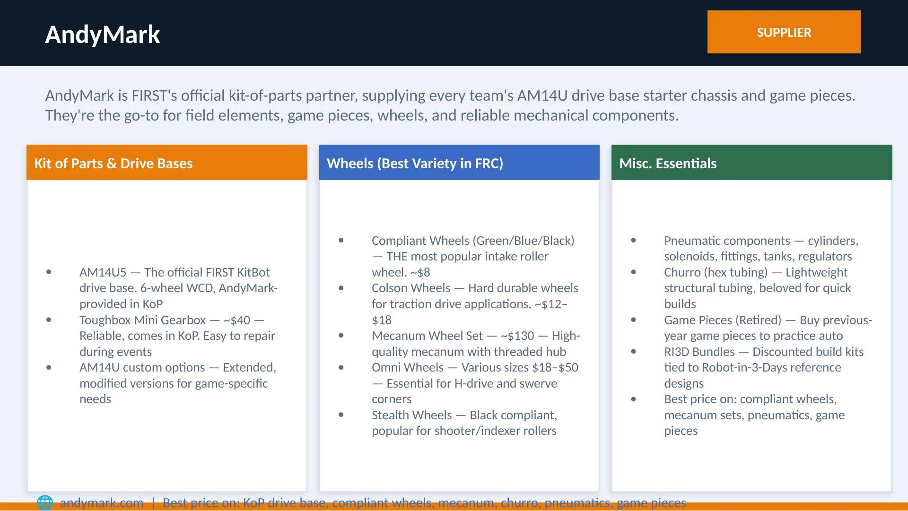
Slide 27AndyMark
SUPPLIER
AndyMark is FIRST's official kit-of-parts partner, supplying every team's AM14U drive base starter chassis and game pieces. They're the go-to for field elements, game pieces, wheels, and reliable mechanical components.
Kit of Parts & Drive Bases
AM14U5 — The official FIRST KitBot drive base. 6-wheel WCD, AndyMark-provided in KoP
Toughbox Mini Gearbox — ~$40 — Reliable, comes in KoP. Easy to repair during events
AM14U custom options — Extended, modified versions for game-specific needs
Wheels (Best Variety in FRC)
Compliant Wheels (Green/Blue/Black) — THE most popular intake roller wheel. ~$8
Colson Wheels — Hard durable wheels for traction drive applications. ~$12–$18
Mecanum Wheel Set — ~$130 — High-quality mecanum with threaded hub
Omni Wheels — Various sizes $18–$50 — Essential for H-drive and swerve corners
Stealth Wheels — Black compliant, popular for shooter/indexer rollers
Misc. Essentials
Pneumatic components — cylinders, solenoids, fittings, tanks, regulators
Churro (hex tubing) — Lightweight structural tubing, beloved for quick builds
Game Pieces (Retired) — Buy previous-year game pieces to practice auto
RI3D Bundles — Discounted build kits tied to Robot-in-3-Days reference designs
Best price on: compliant wheels, mecanum sets, pneumatics, game pieces
🌐 andymark.com | Best price on: KoP drive base, compliant wheels, mecanum, churro, pneumatics, game pieces
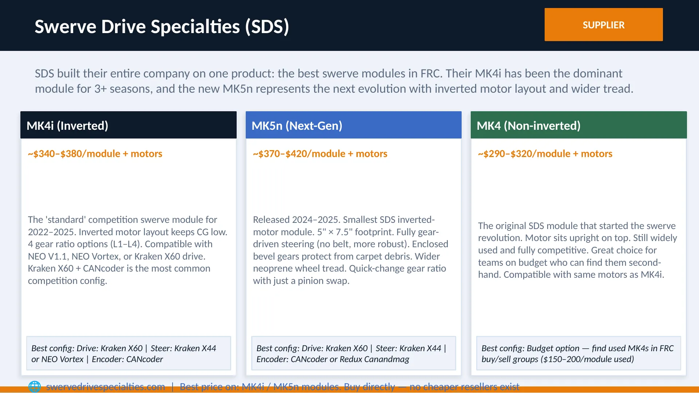
Slide 28Swerve Drive Specialties (SDS)
SUPPLIER
SDS built their entire company on one product: the best swerve modules in FRC. Their MK4i has been the dominant module for 3+ seasons, and the new MK5n represents the next evolution with inverted motor layout and wider tread.
MK4i (Inverted)
~$340–$380/module + motors
The 'standard' competition swerve module for 2022–2025. Inverted motor layout keeps CG low. 4 gear ratio options (L1–L4). Compatible with NEO V1.1, NEO Vortex, or Kraken X60 drive. Kraken X60 + CANcoder is the most common competition config.
Best config: Drive: Kraken X60 | Steer: Kraken X44 or NEO Vortex | Encoder: CANcoder
MK5n (Next-Gen)
~$370–$420/module + motors
Released 2024–2025. Smallest SDS inverted-motor module. 5" × 7.5" footprint. Fully gear-driven steering (no belt, more robust). Enclosed bevel gears protect from carpet debris. Wider neoprene wheel tread. Quick-change gear ratio with just a pinion swap.
Best config: Drive: Kraken X60 | Steer: Kraken X44 | Encoder: CANcoder or Redux Canandmag
MK4 (Non-inverted)
~$290–$320/module + motors
The original SDS module that started the swerve revolution. Motor sits upright on top. Still widely used and fully competitive. Great choice for teams on budget who can find them second-hand. Compatible with same motors as MK4i.
Best config: Budget option — find used MK4s in FRC buy/sell groups ($150–200/module used)
🌐 swervedrivespecialties.com | Best price on: MK4i / MK5n modules. Buy directly — no cheaper resellers exist
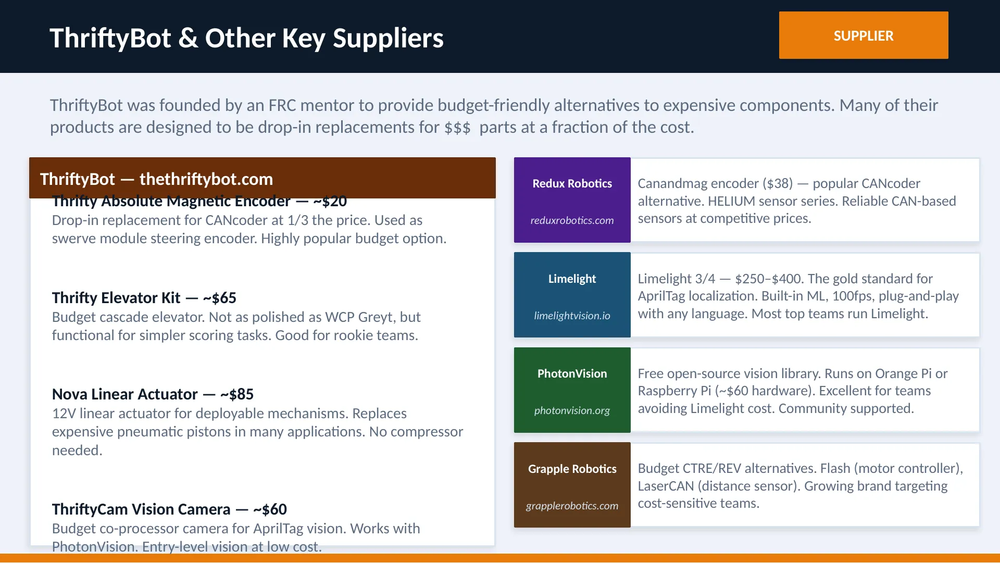
Slide 29ThriftyBot & Other Key Suppliers
SUPPLIER
ThriftyBot was founded by an FRC mentor to provide budget-friendly alternatives to expensive components. Many of their products are designed to be drop-in replacements for $$$ parts at a fraction of the cost.
ThriftyBot — thethriftybot.com
Thrifty Absolute Magnetic Encoder — ~$20
Drop-in replacement for CANcoder at 1/3 the price. Used as swerve module steering encoder. Highly popular budget option.
Thrifty Elevator Kit — ~$65
Budget cascade elevator. Not as polished as WCP Greyt, but functional for simpler scoring tasks. Good for rookie teams.
Nova Linear Actuator — ~$85
12V linear actuator for deployable mechanisms. Replaces expensive pneumatic pistons in many applications. No compressor needed.
ThriftyCam Vision Camera — ~$60
Budget co-processor camera for AprilTag vision. Works with PhotonVision. Entry-level vision at low cost.
Redux Robotics
reduxrobotics.com
Canandmag encoder ($38) — popular CANcoder alternative. HELIUM sensor series. Reliable CAN-based sensors at competitive prices.
Limelight
limelightvision.io
Limelight 3/4 — $250–$400. The gold standard for AprilTag localization. Built-in ML, 100fps, plug-and-play with any language. Most top teams run Limelight.
PhotonVision
photonvision.org
Free open-source vision library. Runs on Orange Pi or Raspberry Pi (~$60 hardware). Excellent for teams avoiding Limelight cost. Community supported.
Grapple Robotics
grapplerobotics.com
Budget CTRE/REV alternatives. Flash (motor controller), LaserCAN (distance sensor). Growing brand targeting cost-sensitive teams.
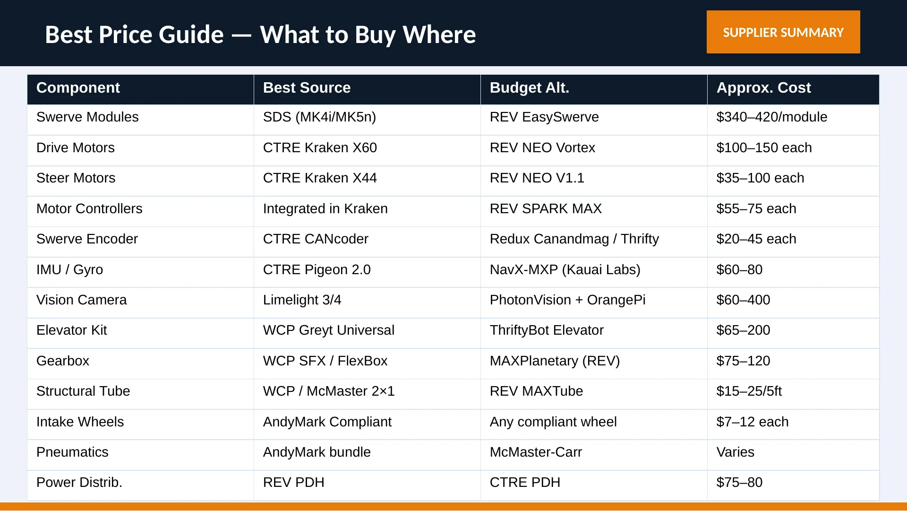
Slide 30Best Price Guide — What to Buy Where
SUPPLIER SUMMARY
Component
Best Source
Budget Alt.
Approx. Cost
Swerve Modules
SDS (MK4i/MK5n)
REV EasySwerve
$340–420/module
Drive Motors
CTRE Kraken X60
REV NEO Vortex
$100–150 each
Steer Motors
CTRE Kraken X44
REV NEO V1.1
$35–100 each
Motor Controllers
Integrated in Kraken
REV SPARK MAX
$55–75 each
Swerve Encoder
CTRE CANcoder
Redux Canandmag / Thrifty
$20–45 each
IMU / Gyro
CTRE Pigeon 2.0
NavX-MXP (Kauai Labs)
$60–80
Vision Camera
Limelight 3/4
PhotonVision + OrangePi
$60–400
Elevator Kit
WCP Greyt Universal
ThriftyBot Elevator
$65–200
Gearbox
WCP SFX / FlexBox
MAXPlanetary (REV)
$75–120
Structural Tube
WCP / McMaster 2×1
REV MAXTube
$15–25/5ft
Intake Wheels
AndyMark Compliant
Any compliant wheel
$7–12 each
Pneumatics
AndyMark bundle
McMaster-Carr
Varies
Power Distrib.
REV PDH
CTRE PDH
$75–80
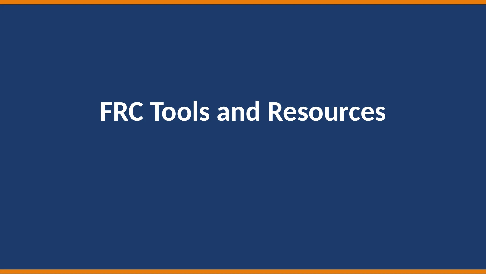
Slide 31FRC Tools and Resources
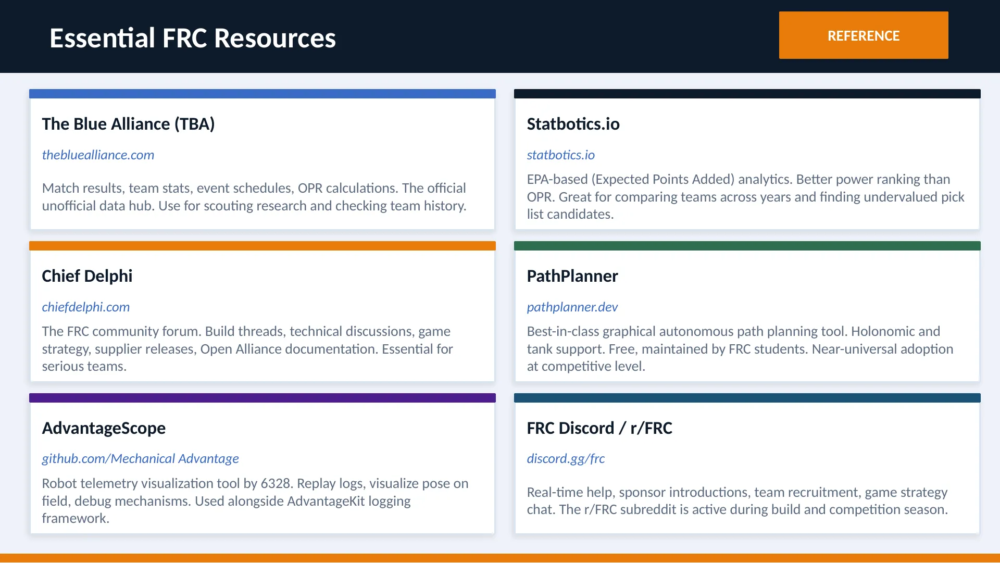
Slide 32Essential FRC Resources
REFERENCE
The Blue Alliance (TBA)
thebluealliance.com
Match results, team stats, event schedules, OPR calculations. The official unofficial data hub. Use for scouting research and checking team history.
Statbotics.io
statbotics.io
EPA-based (Expected Points Added) analytics. Better power ranking than OPR. Great for comparing teams across years and finding undervalued pick list candidates.
Chief Delphi
chiefdelphi.com
The FRC community forum. Build threads, technical discussions, game strategy, supplier releases, Open Alliance documentation. Essential for serious teams.
PathPlanner
pathplanner.dev
Best-in-class graphical autonomous path planning tool. Holonomic and tank support. Free, maintained by FRC students. Near-universal adoption at competitive level.
AdvantageScope
github.com/Mechanical Advantage
Robot telemetry visualization tool by 6328. Replay logs, visualize pose on field, debug mechanisms. Used alongside AdvantageKit logging framework.
FRC Discord / r/FRC
discord.gg/frc
Real-time help, sponsor introductions, team recruitment, game strategy chat. The r/FRC subreddit is active during build and competition season.
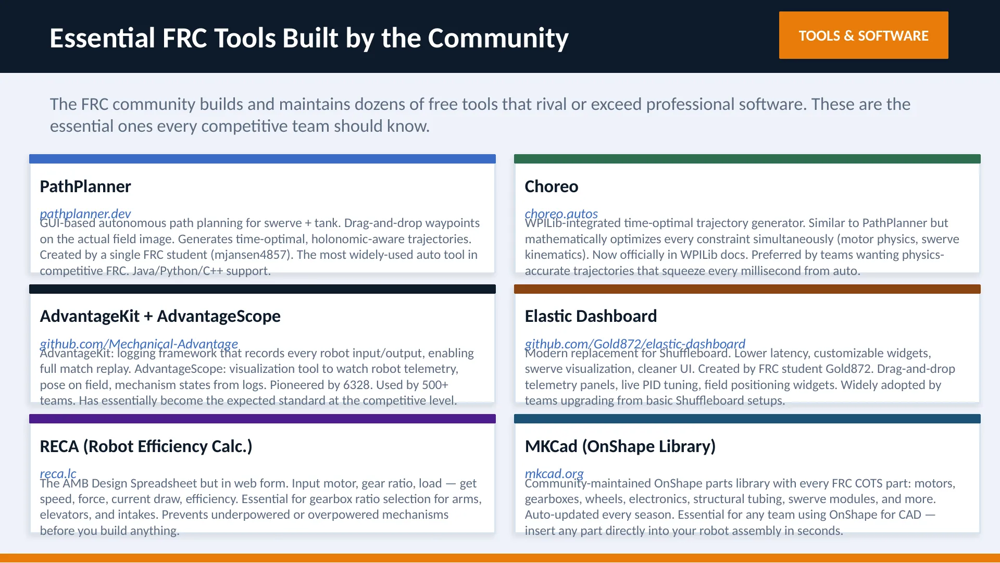
Slide 33Essential FRC Tools Built by the Community
TOOLS & SOFTWARE
The FRC community builds and maintains dozens of free tools that rival or exceed professional software. These are the essential ones every competitive team should know.
PathPlanner
pathplanner.dev
GUI-based autonomous path planning for swerve + tank. Drag-and-drop waypoints on the actual field image. Generates time-optimal, holonomic-aware trajectories. Created by a single FRC student (mjansen4857). The most widely-used auto tool in competitive FRC. Java/Python/C++ support.
Choreo
choreo.autos
WPILib-integrated time-optimal trajectory generator. Similar to PathPlanner but mathematically optimizes every constraint simultaneously (motor physics, swerve kinematics). Now officially in WPILib docs. Preferred by teams wanting physics-accurate trajectories that squeeze every millisecond from auto.
AdvantageKit + AdvantageScope
github.com/Mechanical-Advantage
AdvantageKit: logging framework that records every robot input/output, enabling full match replay. AdvantageScope: visualization tool to watch robot telemetry, pose on field, mechanism states from logs. Pioneered by 6328. Used by 500+ teams. Has essentially become the expected standard at the competitive level.
Elastic Dashboard
github.com/Gold872/elastic-dashboard
Modern replacement for Shuffleboard. Lower latency, customizable widgets, swerve visualization, cleaner UI. Created by FRC student Gold872. Drag-and-drop telemetry panels, live PID tuning, field positioning widgets. Widely adopted by teams upgrading from basic Shuffleboard setups.
RECA (Robot Efficiency Calc.)
reca.lc
The AMB Design Spreadsheet but in web form. Input motor, gear ratio, load — get speed, force, current draw, efficiency. Essential for gearbox ratio selection for arms, elevators, and intakes. Prevents underpowered or overpowered mechanisms before you build anything.
MKCad (OnShape Library)
mkcad.org
Community-maintained OnShape parts library with every FRC COTS part: motors, gearboxes, wheels, electronics, structural tubing, swerve modules, and more. Auto-updated every season. Essential for any team using OnShape for CAD — insert any part directly into your robot assembly in seconds.
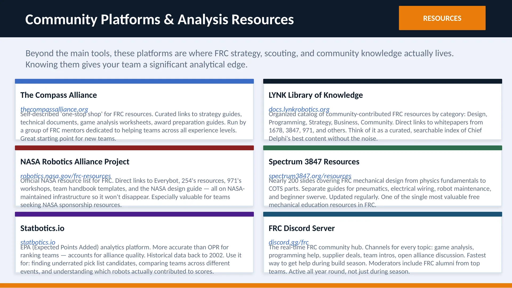
Slide 34Community Platforms & Analysis Resources
RESOURCES
Beyond the main tools, these platforms are where FRC strategy, scouting, and community knowledge actually lives. Knowing them gives your team a significant analytical edge.
The Compass Alliance
thecompassalliance.org
Self-described 'one-stop shop' for FRC resources. Curated links to strategy guides, technical documents, game analysis worksheets, award preparation guides. Run by a group of FRC mentors dedicated to helping teams across all experience levels. Great starting point for new teams.
LYNK Library of Knowledge
docs.lynkrobotics.org
Organized catalog of community-contributed FRC resources by category: Design, Programming, Strategy, Business, Community. Direct links to whitepapers from 1678, 3847, 971, and others. Think of it as a curated, searchable index of Chief Delphi's best content without the noise.
NASA Robotics Alliance Project
robotics.nasa.gov/frc-resources
Official NASA resource list for FRC. Direct links to Everybot, 254's resources, 971's workshops, team handbook templates, and the NASA design guide — all on NASA-maintained infrastructure so it won't disappear. Especially valuable for teams seeking NASA sponsorship resources.
Spectrum 3847 Resources
spectrum3847.org/resources
Nearly 200 slides covering FRC mechanical design from physics fundamentals to COTS parts. Separate guides for pneumatics, electrical wiring, robot maintenance, and beginner swerve. Updated regularly. One of the single most valuable free mechanical education resources in FRC.
Statbotics.io
statbotics.io
EPA (Expected Points Added) analytics platform. More accurate than OPR for ranking teams — accounts for alliance quality. Historical data back to 2002. Use it for: finding underrated pick list candidates, comparing teams across different events, and understanding which robots actually contributed to scores.
FRC Discord Server
discord.gg/frc
The real-time FRC community hub. Channels for every topic: game analysis, programming help, supplier deals, team intros, open alliance discussion. Fastest way to get help during build season. Moderators include FRC alumni from top teams. Active all year round, not just during season.
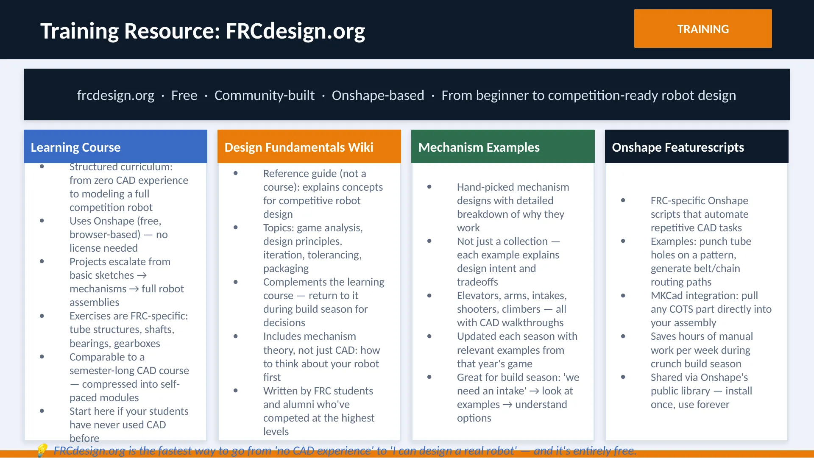
Slide 35Training Resource: FRCdesign.org
TRAINING
frcdesign.org · Free · Community-built · Onshape-based · From beginner to competition-ready robot design
Learning Course
Structured curriculum: from zero CAD experience to modeling a full competition robot
Uses Onshape (free, browser-based) — no license needed
Projects escalate from basic sketches → mechanisms → full robot assemblies
Exercises are FRC-specific: tube structures, shafts, bearings, gearboxes
Comparable to a semester-long CAD course — compressed into self-paced modules
Start here if your students have never used CAD before
Design Fundamentals Wiki
Reference guide (not a course): explains concepts for competitive robot design
Topics: game analysis, design principles, iteration, tolerancing, packaging
Complements the learning course — return to it during build season for decisions
Includes mechanism theory, not just CAD: how to think about your robot first
Written by FRC students and alumni who've competed at the highest levels
Mechanism Examples
Hand-picked mechanism designs with detailed breakdown of why they work
Not just a collection — each example explains design intent and tradeoffs
Elevators, arms, intakes, shooters, climbers — all with CAD walkthroughs
Updated each season with relevant examples from that year's game
Great for build season: 'we need an intake' → look at examples → understand options
Onshape Featurescripts
FRC-specific Onshape scripts that automate repetitive CAD tasks
Examples: punch tube holes on a pattern, generate belt/chain routing paths
MKCad integration: pull any COTS part directly into your assembly
Saves hours of manual work per week during crunch build season
Shared via Onshape's public library — install once, use forever
💡 FRCdesign.org is the fastest way to go from 'no CAD experience' to 'I can design a real robot' — and it's entirely free.
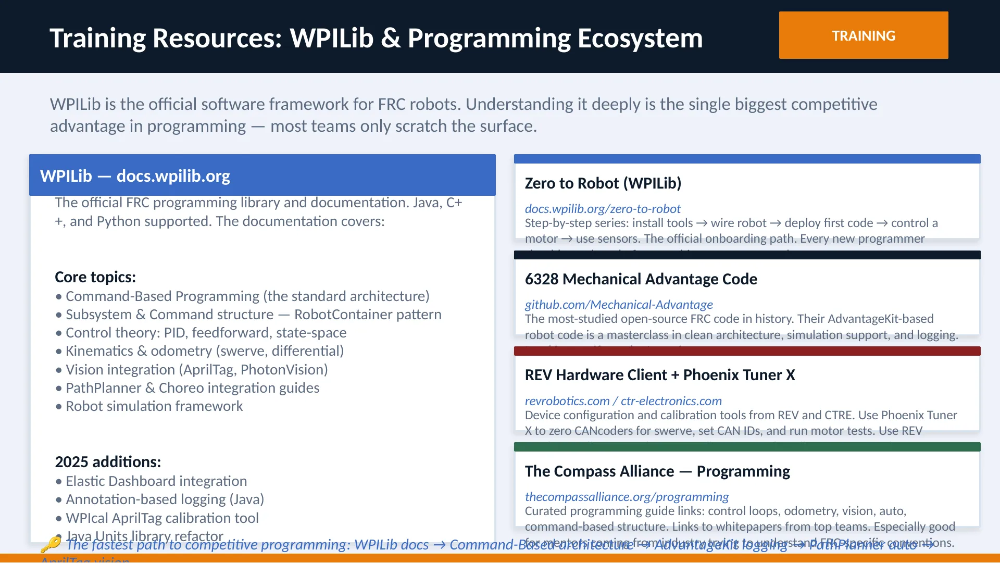
Slide 36Training Resources: WPILib & Programming Ecosystem
TRAINING
WPILib is the official software framework for FRC robots. Understanding it deeply is the single biggest competitive advantage in programming — most teams only scratch the surface.
WPILib — docs.wpilib.org
The official FRC programming library and documentation. Java, C++, and Python supported. The documentation covers:
Core topics:
• Command-Based Programming (the standard architecture)
• Subsystem & Command structure — RobotContainer pattern
• Control theory: PID, feedforward, state-space
• Kinematics & odometry (swerve, differential)
• Vision integration (AprilTag, PhotonVision)
• PathPlanner & Choreo integration guides
• Robot simulation framework
2025 additions:
• Elastic Dashboard integration
• Annotation-based logging (Java)
• WPIcal AprilTag calibration tool
• Java Units library refactor
Zero to Robot (WPILib)
docs.wpilib.org/zero-to-robot
Step-by-step series: install tools → wire robot → deploy first code → control a motor → use sensors. The official onboarding path. Every new programmer should start here before touching any custom code.
6328 Mechanical Advantage Code
github.com/Mechanical-Advantage
The most-studied open-source FRC code in history. Their AdvantageKit-based robot code is a masterclass in clean architecture, simulation support, and logging. Read it even if you don't use it.
REV Hardware Client + Phoenix Tuner X
revrobotics.com / ctr-electronics.com
Device configuration and calibration tools from REV and CTRE. Use Phoenix Tuner X to zero CANcoders for swerve, set CAN IDs, and run motor tests. Use REV Hardware Client to update SPARK firmware and configure motor settings.
The Compass Alliance — Programming
thecompassalliance.org/programming
Curated programming guide links: control loops, odometry, vision, auto, command-based structure. Links to whitepapers from top teams. Especially good for mentors coming from industry trying to understand FRC-specific conventions.
🔑 The fastest path to competitive programming: WPILib docs → Command-Based architecture → AdvantageKit logging → PathPlanner auto → AprilTag vision
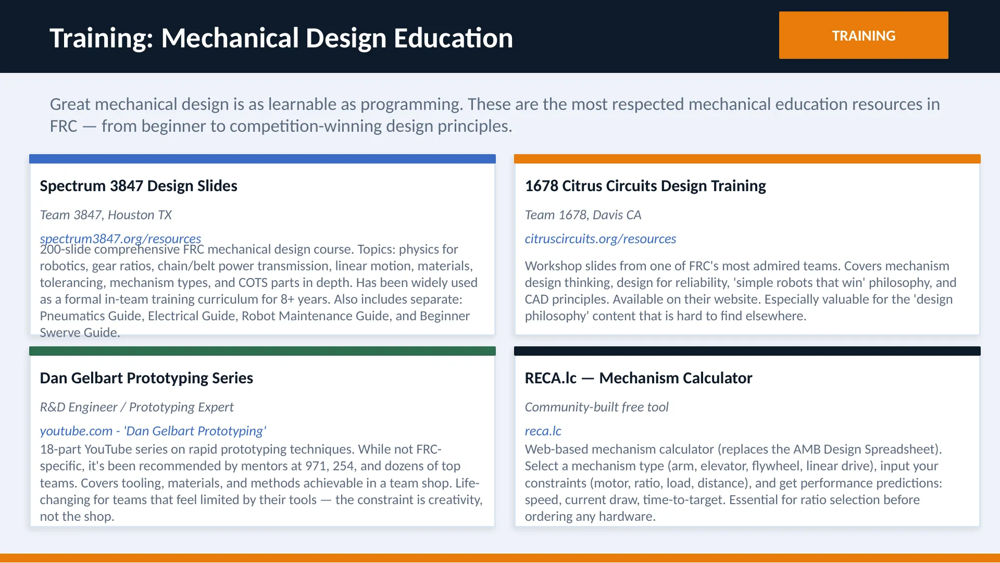
Slide 37Training: Mechanical Design Education
TRAINING
Great mechanical design is as learnable as programming. These are the most respected mechanical education resources in FRC — from beginner to competition-winning design principles.
Spectrum 3847 Design Slides
Team 3847, Houston TX
spectrum3847.org/resources
200-slide comprehensive FRC mechanical design course. Topics: physics for robotics, gear ratios, chain/belt power transmission, linear motion, materials, tolerancing, mechanism types, and COTS parts in depth. Has been widely used as a formal in-team training curriculum for 8+ years. Also includes separate: Pneumatics Guide, Electrical Guide, Robot Maintenance Guide, and Beginner Swerve Guide.
1678 Citrus Circuits Design Training
Team 1678, Davis CA
citruscircuits.org/resources
Workshop slides from one of FRC's most admired teams. Covers mechanism design thinking, design for reliability, 'simple robots that win' philosophy, and CAD principles. Available on their website. Especially valuable for the 'design philosophy' content that is hard to find elsewhere.
Dan Gelbart Prototyping Series
R&D Engineer / Prototyping Expert
youtube.com - 'Dan Gelbart Prototyping'
18-part YouTube series on rapid prototyping techniques. While not FRC-specific, it's been recommended by mentors at 971, 254, and dozens of top teams. Covers tooling, materials, and methods achievable in a team shop. Life-changing for teams that feel limited by their tools — the constraint is creativity, not the shop.
RECA.lc — Mechanism Calculator
Community-built free tool
reca.lc
Web-based mechanism calculator (replaces the AMB Design Spreadsheet). Select a mechanism type (arm, elevator, flywheel, linear drive), input your constraints (motor, ratio, load, distance), and get performance predictions: speed, current draw, time-to-target. Essential for ratio selection before ordering any hardware.
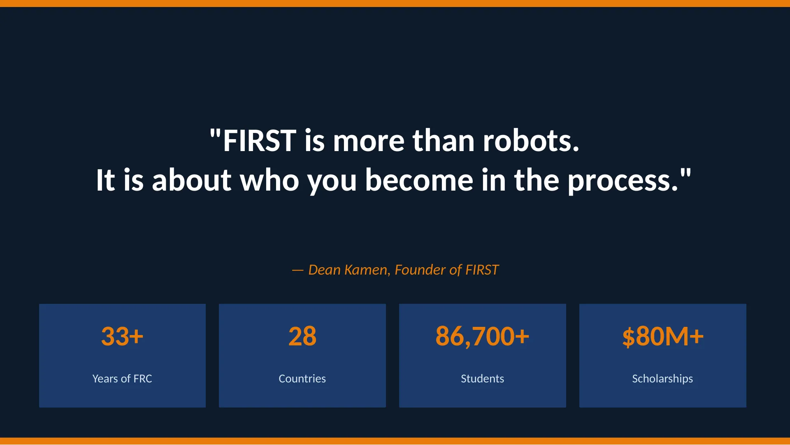
Slide 38"FIRST is more than robots.
It is about who you become in the process."
— Dean Kamen, Founder of FIRST
33+
Years of FRC
28
Countries
86,700+
Students
$80M+
Scholarships